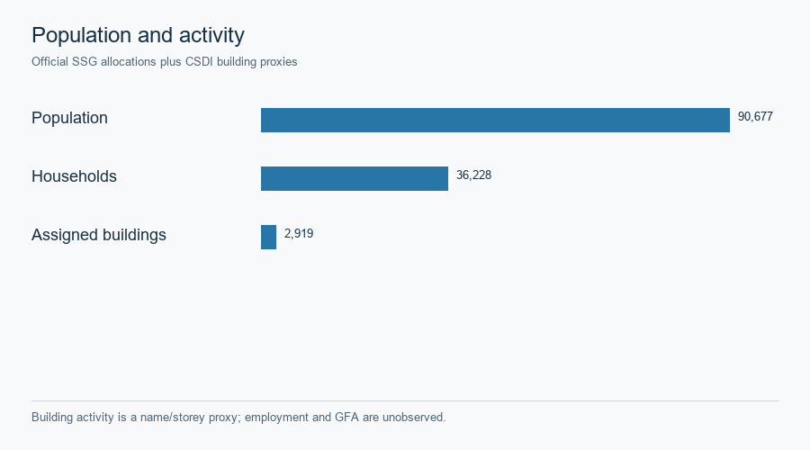
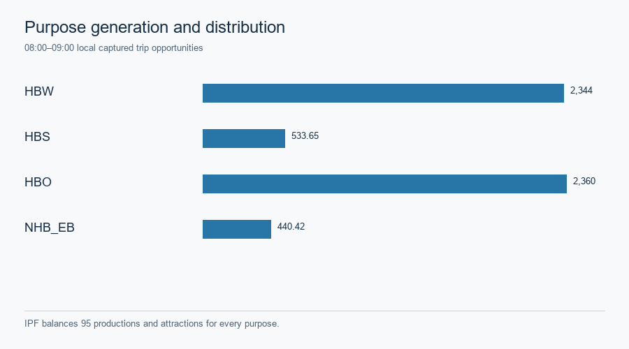
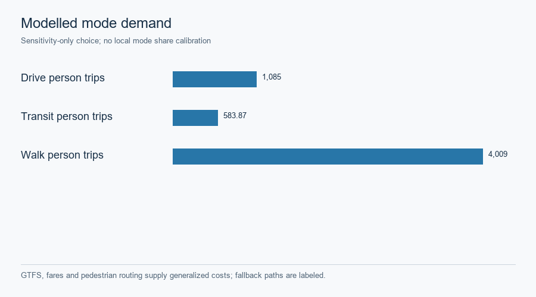

Hong Kong · four-stage engineering scenario
This saved R2–R4 scenario is based on 95 fine SSG zones and 10 STPUG parents. The 2021 census geographies provide population and households, while official building footprints, storeys and name keywords supply activity proxies. Employment and official gross floor area were not observed. The source allocation, activity grades and exclusion ledger are in the public Phase B records.

These are separate prepared attributes; storey-weighted building activity is not a measured job count. SVG · Source record.

| Stage | Saved construction | Boundary |
|---|---|---|
| Generation | Territory-wide 2022 Travel Characteristics Survey mechanised rate, purpose totals and approximately 13% 08:00–09:00 share transferred to this pilot; local capture 0.20/0.30/0.40 is a sensitivity | Not a locally estimated trip rate |
| Distribution | Turn-aware road-time gravity and IPF balance productions and attractions for every purpose over 8,930 reachable directed interzonal pairs | No observed OD matrix is asserted |
| Mode choice | GTFS same-trip rides, headway waiting, exact fares and pedestrian access form generalized costs; declared sensitivity logit and 1.5-person vehicle occupancy | Unroutable walking uses a labeled straight-line fallback; no local calibration |
| Road assignment | Modeled one-hour vehicle PCE enters turn-aware static FW and Algorithm B | Not measured traffic or the finite space–time CG demand |

The margins and directed OD balance are saved in the distribution report. SVG · Source record.


GTFS, fares and pedestrian routing support generalized costs; fallback paths and unknowns remain identified. SVG · Mode-choice assumptions.

The 2023/2024 Annual Traffic Census records at 81 station points are descriptive AADT context. The detector layer is one 30-second snapshot, and the private UrbanNav reference trace is one research-vehicle route. None is a held-out calibration sample for this scenario. Observation ledger · Source and rights register · Case landing.